26. Repetition
Det var det. Sedan är det bara att repetera det som du lärt dig.
Uppgifter
- Förenkla
- \( \dfrac{2x^2-x}{3x} \)
\( \dfrac{2x^2-x}{3x} = \dfrac{x(2x-1)}{3x}=\dfrac{2x-1}{3} \)
- \( \dfrac{x^2-4}{x+2} \)
\( \dfrac{x^2-4}{x+2} = \dfrac{(x-2)(x+2)}{x+2} = x-2 \)
- \( \dfrac{x^2-3x+2}{2x-2} \)
Vi faktoriserar med hjälp av nollställena.
\( \dfrac{x^2-3x+2}{2x-2} = \dfrac{(x-1)(x-2)}{2(x-1)} = \dfrac{x-2}{2} \)
- \( \dfrac{2x^2-x}{3x} \)
- Lös dessa gamla studentexamensuppgifter. Inom parentesen har ni höst eller vår plus årtal och uppgiftens nummer.
- Förenkla \( \dfrac{x^2-9}{x+3} \). [H12, 2b)]
\( \dfrac{x^2-9}{x+3} = \dfrac{(x-3)(x+3)}{x+3} = x-3 \)
- Bestäm \( \dfrac{x}{1-x} + \dfrac{x}{1+x} \). [V05, 1a)]
\( ^{1+x)}\dfrac{x}{1-x} + ^{1-x)}\dfrac{x}{1+x} = \dfrac{x(1+x)+x(1-x)}{(1-x)(1+x)} =\dfrac{x+x^2+x-x^2}{1-x^2} = \dfrac{2x}{1-x^2} \)
- Beräkna \( \dfrac{1}{a-1}(a-\dfrac{1}{a}) \). [V06, 1c]
\( \dfrac{1}{a-1}(a-\dfrac{1}{a})=^{a)}\dfrac{a}{a-1}-\dfrac{1}{a(a-1)}=\dfrac{a^2-1}{a(a-1)} = \dfrac{(a+1)(a-1)}{a(a-1)} =\dfrac{a+1}{a} \)
- Bestäm \( \dfrac{1}{x}-\dfrac{1}{x^2}+\dfrac{1+x}{x^2} \). [H08, 1b)]
\( ^{x)}\dfrac{1}{x}-\dfrac{1}{x^2}+\dfrac{1+x}{x^2} = \dfrac{x\cdot1-1+1+x}{x^2}=\dfrac{2x}{x^2}=\dfrac{2}{x} \)
- Bestäm \( \dfrac{a^2}{3}-(\dfrac{-a}{3})^2 \). [V09, 1a)]
\( \dfrac{a^2}{3}-(\dfrac{-a}{3})^2 = ^{3)}\dfrac{a^2}{3}-\dfrac{a^2}{9}=\dfrac{3a^2-a^2}{9}=\dfrac{2a^2}{9} \)
- Förenkla \( (\sqrt{a}+1)^2-a-1 \). [V10, 1b)]
\( (\sqrt{a}+1)^2-a-1 = a+2\sqrt{a}+1-a-1 = 2\sqrt{a} \)
- Förenkla \( \dfrac{x^2-9}{x+3} \). [H12, 2b)]
- Bestäm definitionsmängd för följande funktioner.
- \( \sqrt{-5-x} \)
Roten är definierad då radikanden, det som är under roten är positivt. Alltså \( x \leq -5 \).
- \( \dfrac{\sqrt{3-x}}{\sqrt{-5-x}} \)
Täljaren är definierad då \( x \leq 3 \).
Nämnaren får inte ha värdet noll och är definierad då \( x < -5 \).
Alltså är definitionsmängden \( x < -5 \).
- \( \sqrt[3]{-5-x} \)
En udda rot är alltid definierad. Alltså är definitionsmängden alla reella tal, \( \mathbf{R} \).
- \( \sqrt{-5-x} \)
- Kombinera rätt funktion med rätt derivatafunktion.
Välj bland följande funktioner:
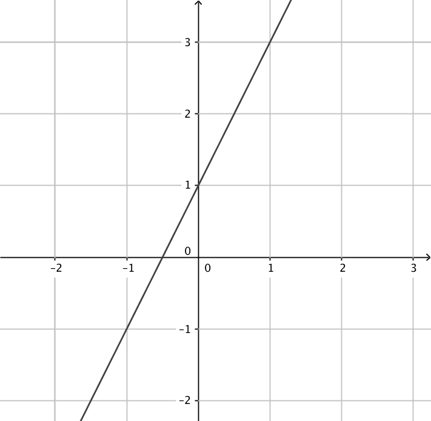 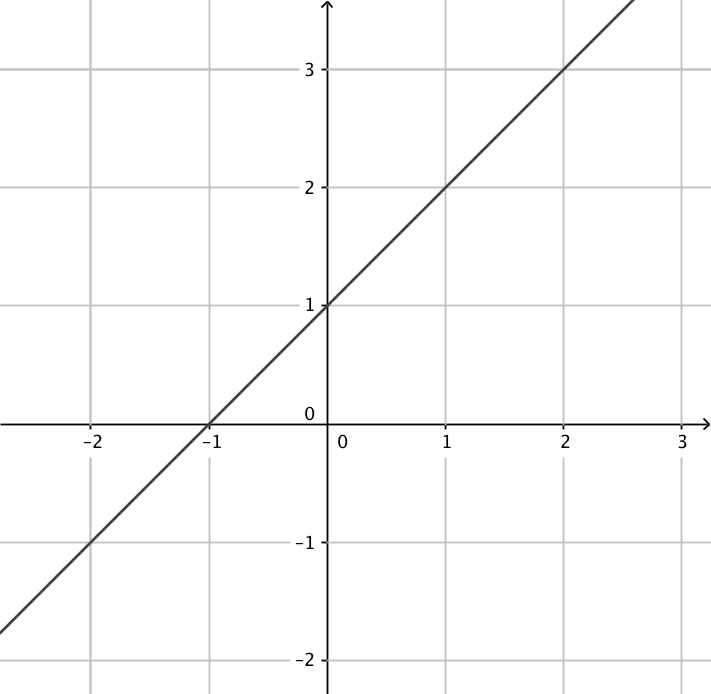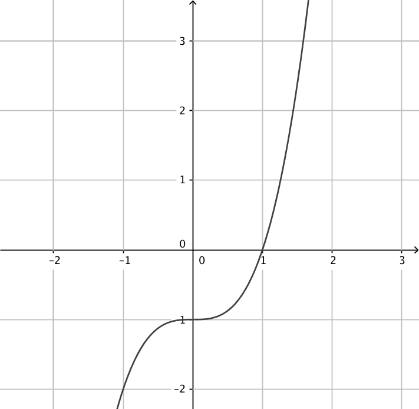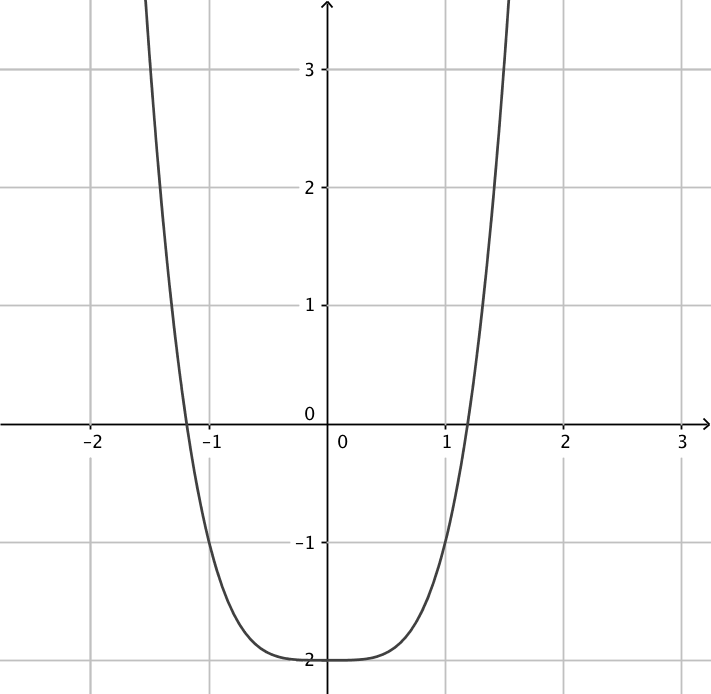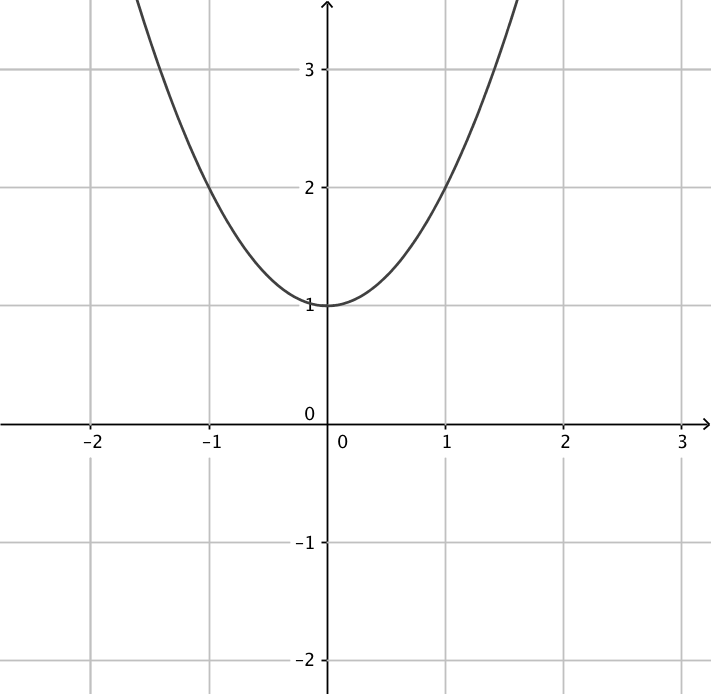
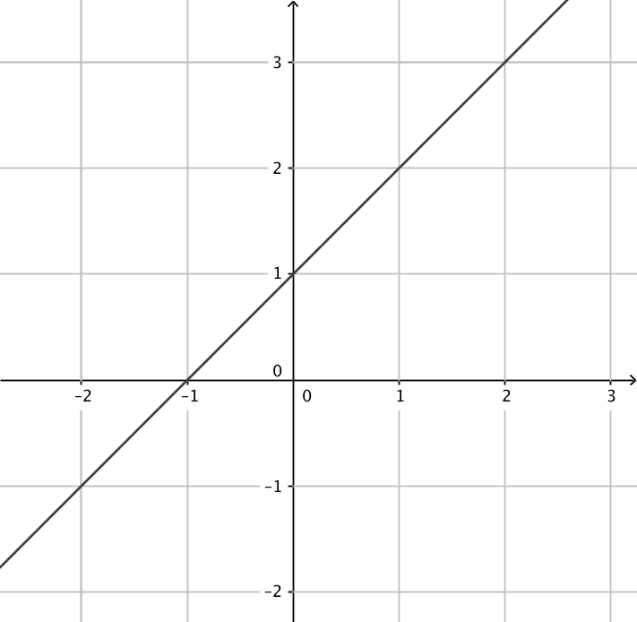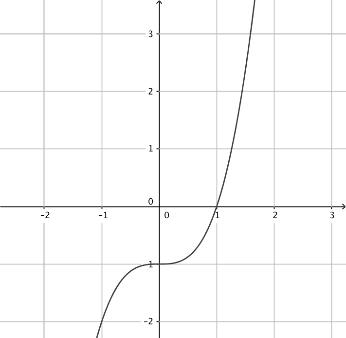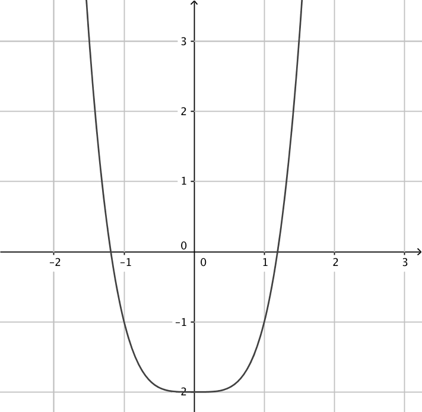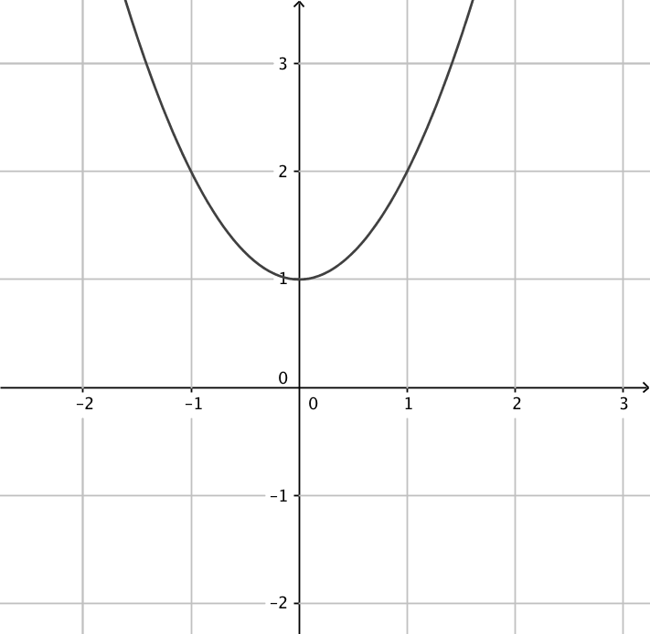Funktion Derivata funktion 
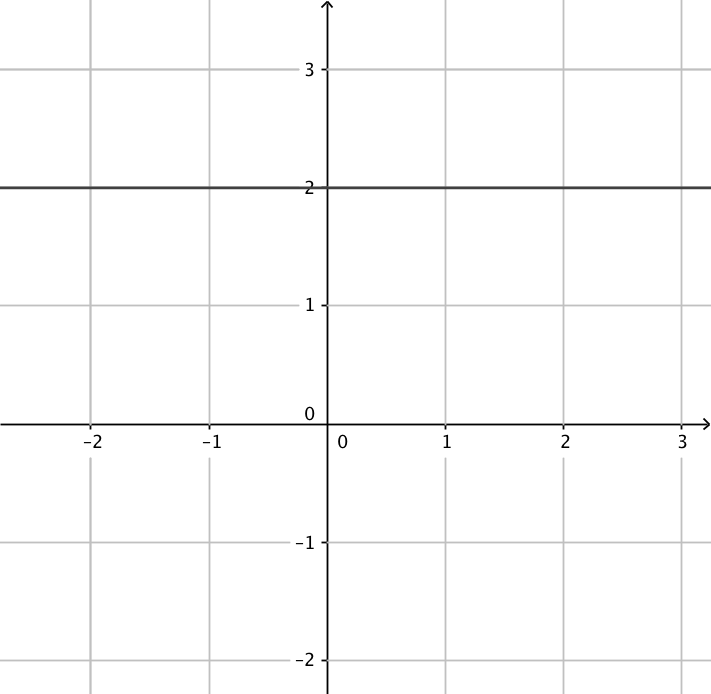 


Funktion Derivata funktion - Derivera följande funktioner utan räknare. Kontrollera svaret genom att derivera på räknare.
- \( \sqrt{2x-1} \)
\( D\sqrt{2x-1} = D(2x-1)^{\frac{1}{2}}=\dfrac{1}{2}(2x-1)^{-\dfrac{1}{2}}\cdot 2 = \dfrac{1}{\sqrt{2x-1}} \)
- \( \ln (x^2-1) \)
\( D\ln(x^2-1) = \dfrac{1}{x^2-1}\cdot 2x =\dfrac{2x}{x^2-1} \)
- \( e^{x^3} \)
\( De^{x^3} = e^{x^3}\cdot 3x^2 = 3x^2e^{x^3} \)
- \( \sqrt{2x-1} \)
- Bestäm nollstället för derivatafunktionen för följande funktioner.
- \( f(x) = x^4 \ln x \)
Derivatafunktionen är \( f'(x) = 4x^3 \ln x +x^3 \).
Derivatans nollställe, \( f'(x)=0 \), är \( x = \dfrac{1}{\sqrt[4]{e}} \).
- \( g(x)=\dfrac{\ln x}{x^4} \)
Derivatafunktionen är \( g'(x) = \dfrac{-4\ln x +1}{x^5} \).
Derivatans nollställe, \( g'(x)=0 \), är \( x = \sqrt[4]{e} \).
- \( h(x) = \dfrac{1}{e^{4x}} \)
Derivatafunktionen är \( h'(x) = -\dfrac{4}{e^{4x}} \).
Derivatans nollställe, \( h'(x)=0 \), saknas.
- \( f(x) = x^4 \ln x \)
- Bestäm de reella rötter som uppfyller ekvationen \( \sqrt{2-x}=x+2 \). [H08, 7]
Definitionsmängden
För kvadratroten gäller att definitionsmängden är \( 2-x\geq 0 \Leftrightarrow x\leq 2 \).
Eftersom roten är positiv måste \( x+2 \geq 0 \Leftrightarrow x \geq -2 \).
Då bägge gäller samtidigt får vi definitionsmängden till \( -2\leq x \leq 2 \).
Kvadrering och rotformel ger: \( x=\dfrac{-5\pm\sqrt{17}}{2} \).
Av dessa duger endast \( x=\dfrac{-5 +\sqrt{17}}{2} \) pga definitionsmängden.
- Välj rätt derivatafunktion för funktionen i fråga.
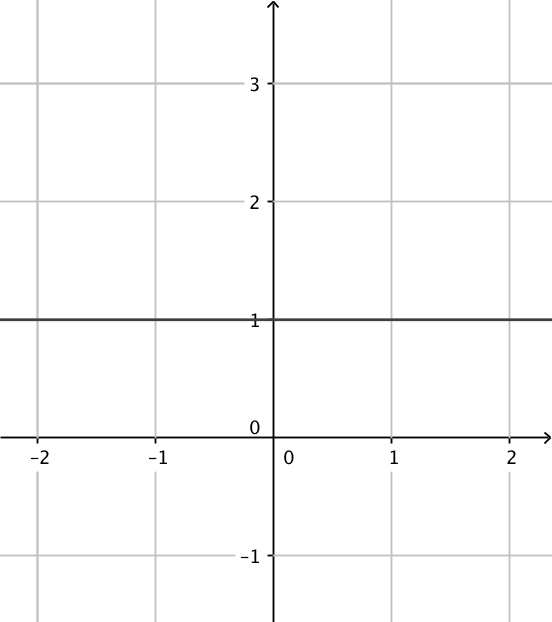 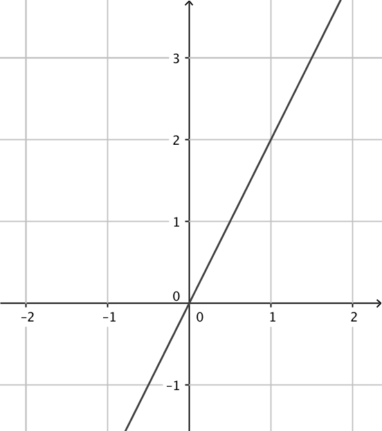 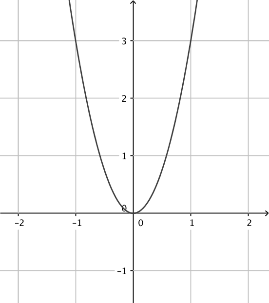 \( f(x)=x-1 \) \( g(x)=x^2+1 \) \( h(x)=x+2 \) \( i(x)=x^3+1 \) \( j(x)=x^2-1 \) \( k(x)=x^3-1 \) Tag antingen och derivera, eller fundera och kom ihåg vad sambandet är mellan en funktion och dess derivatafunktion.
\( f(x)=x-1 \) \( g(x)=x^2+1 \) \( h(x)=x+2 \) \( i(x)=x^3+1 \) \( j(x)=x^2-1 \) \( k(x)=x^3-1 \) - Ordna följande instruktioner i rätt ordning så att algoritmen blir sann då vi undersöker funktioner.
Utgå från derivatans nollställen och bilda ett teckenschema.Sök derivatans nollställen, lös alltså ekvationen \( f’(x)=0 \).Derivera funktionen.Från teckenschemat vet du hur funktionen beter sig och var du hittar största och minsta värden.
Instruktion Ordning 1. 2. 3. 4. Instruktion Ordning Derivera funktionen. 1. Sök derivatans nollställen, lös alltså ekvationen \( f’(x)=0 \). 2. Utgå från derivatans nollställen och bilda ett teckenschema. 3. Från teckenschemat vet du hur funktionen beter sig och var du hittar största och minsta värden. 4. - I figuren nedan visas grafen av derivatafunktionen \( f'(x) \) till en viss funktion \( f(x) \) i intervallet \( -2 < x < 3 \).

- Bestäm utgående från grafen nollställena till derivatafunktionen \( f'(x) \).
Nollställena är \( x= -1, x= 0 \) och \( x=2 \).
- Bestäm det intervall då funktionen \( f \) är avtagande.
\( f \) är avtagande då \( -2 \leq x \leq -1 \) och då \( 0 \leq x \leq 2 \).
- Bestäm utgående från grafen de lokala extremställena för funktionen \( f(x) \) och vilka typer av extremställen är det frågan om?
I \( x=-1 \) har vi ett minimivärde eftersom funktionen avtar och sedan växer den.
I \( x=0 \) har vi ett maximivärde eftersom funktionen växer för att sedan avta.
I \( x=2 \) har vi ett minimivärde eftersom funktionen avtar och sedan växer den.
Vilket av minimivärdena är de minsta kan vi inte säga något om, tyvärr.
- Bestäm utgående från grafen nollställena till derivatafunktionen \( f'(x) \).
- Bestäm största och minsta värde för funktionen \( f(x)=\sqrt{-x^2+2x+1} \).
\( f'(x)=\dfrac{-x+1}{\sqrt{-x^2+2x+1}} \).
\( f'(x)=0 \) i \( x=1 \). Största och minsta värde i intervallets ändpunkter eller där \( f'(x)=0 \).
Största värdet är \( \sqrt{2} \) och minsta värdet är 0.
- Låt \( f(x) = 3x - 2\sqrt{1-x} \).
- För vilket värde på \( x \) är funktionsvärdet 2?
Definitionsmängden är \( 1-x \geq 0 \). Alltså \( x \leq 1 \).
Vi skall lösa ekvationen \( 2 = 3x - 2\sqrt{1-x} \). Flytta över \( 3x \) och kvadrera.
Lösningen är \( x = \dfrac{8}{9} \).
- Bestäm derivatafunktionen.
\( f'(x) = 3 + \dfrac{1}{\sqrt{1-x}} \), eller som \( \dfrac{3 \sqrt{1-x} + 1}{\sqrt{1-x}} \).
- Bestäm den punkt där tangentens riktningskoefficient har värdet 5.
Vi skall hitta den punkt där derivatan har värdet 5. Alltså skall vi lösa ekvationen \( f'(x)=5 \). Punkten är \( x = \dfrac{3}{4} \).
- För vilket värde på \( x \) är funktionsvärdet 2?
- Bestäm
- \( D(x^2-1)(x+2) \)
\( D(x^2-1)(x+2)= (x^2-1)\cdot 1 + (x+2)2x = 3x^2+4x-1 \)
- \( D\dfrac{x^2-1}{x+2} \)
\( D\dfrac{x^2-1}{x+2}=\dfrac{(x+2)\cdot 2x-(x^2-1)\cdot 1}{(x+2)^2} =\dfrac{x^2+4x+1}{(x+2)^2} \)
- \( D(2x^2-1)^{14} \)
\( D(2x^2-1)^{14}=14(2x^2-1)^{13}\cdot 4x = 56x(2x^2-1)^{13} \)
- \( D[x(x^2-1)^6] \)
\( D[x(x^2-1)^6]=x\cdot 6(x^2-1)^5\cdot 2x +(x^2-1)^6\cdot 1 = 12x^2(x^2-1)^5+(x^2-1)^6 \)
- \( D(x^2-1)(x+2) \)
- Derivera följande funktioner.
- \( f(x) = (-3x^2+x)^4 \)
Vi har en sammansatt funktion.
Den yttre funktionen är \( x^4 \). Derivatan är \( 4x^3 \).
Den inre funktionen är \( -3x^2+x \). Derivatan är \( -6x+1 \)
Vi får \( f'(x) = 4(-3x^2+x)^3 \cdot (-6x+1) \).
- \( g(x) = \sin(3x^2) \)
Vi har en sammansatt funktion.
Den yttre funktionen är \( \sin x \). Derivatan är \( \cos x \).
Den inre funktionen är \( 3x^2 \). Derivatan är \( 6x \)
Vi får \( g'(x) = \cos(3x^2)\cdot 6x = 6x\cos(3x^2) \).
- \( h(x) = \cos^4 x \)
Vi har en sammansatt funktion.
Den yttre funktionen är \( x^4 \). Derivatan är \( 4x^3 \).
Den inre funktionen är \( \cos x \). Derivatan är \( -\sin x \)
Vi får \( h'(x) = 4 \cos^3 x).
- \( f(x) = (-3x^2+x)^4 \)
- Bestäm \( f(-1) \) och \( f'(-1) \) då \( f(x) = x^{1999} - x^{1996} \).
\( f(-1) = (-1)^{1999} - (-1)^{1996} = -1-1 = -2 \).
Derivatafunktionen är \( f'(x) = 1999x^{1998} -1996x^{1995} \).
\( f'(-1) = 1999(-1)^{1998} -1996(-1)^{1995} = 1999\cdot 1 -1996(-1) = 3995 \).
- K Orvar tillverkar konserverad prinskorv. Han vill packa prinskorvarna i konservburkar med volymen 2,0 dl. Hans konservburksmaskin kan tillverka konservburkar som har diametern mellan 4,5 och 8,5 cm. Bestäm diameter och höjd för den burk som har den minsta materialåtgång.
Volymen är \( V=0,2 =\pi r^2\cdot h \) och totala arean är \( 2\pi r^2+2\pi r\cdot h \).
Vår funktion är \( A(r)=2\pi r^2 + \dfrac{2\pi \cdot r \cdot 0,2}{\pi r^2} = 2\pi r^2+0,4r^{-1} \).
Derivatafunktioen är \( A'(r)= 4\pi r-0,4r^{-2} \). Nollstället för derivatafunktionen är \( r=3,17 \). Eftersom \( r \in [2,25 ; 4,25] \) så räcker det med att sätta in intervallets ändpunkter eller derivatans nollställe i funktionen och jämföra värdena.
A(2,25)= 31,99 cm2
A(3,17)=63,27 cm2
A(4,25)=113,58 cm2
Åtgången är minst då radien är 2,25 cm.
Diametern är 4,5 cm och höjden är 12,6 cm.
- Derivera följande funktioner.
- \( f(x) = 2x^4(x^2+2)^3 \)
Vi har en produkt av två funktioner där den ena är en sammansatt funktion.
Vi får först \( f'(x) = D2x^4 \cdot (x^2+2)^3 + 2x^4 \cdot D(x^2+2)^3 \).
Den andra delen är en sammansatt funktion.
Den yttre funktionen är \( x^3 \). Derivatan är \( 3x^2 \).
Den inre funktionen är \( x^2+2 \). Derivatan är \( 2x \)
Vi får
\( \begin{array}{rcl} f'(x) & = & 8x \cdot (x^2+2)^3 + 2x^4 \cdot 3(x^2+2)^2 \cdot 2x \\ & = & 8x(x^2+2)^3 + 24x^5 (x^2+2)^2 \\ & = & 8x[(x^2+2)^3 + 3x^4 (x^2+2)^2] \\ & = & 8x(x^2+2)^2[(x^2+2) + 3x^4] \\ & = & 8x(x^2+2)^2(3x^4 + x^2+2) \\ \end{array} \)
- \( g(x) = \dfrac{(2x+1)^6}{x^2+1} \)
Vi har en rationell funktion där täljaren är en sammansatt funktion.
Vi får först \( g'(x) = \dfrac{D(2x+1)^6(x^2+1)-(2x+1)^6\cdot D(x^2+1)}{(x^2+1)^2} \).
Det vi ursprungligen har i täljaren är en sammanstatt funktion.
Den yttre funktionen är \( x^6 \). Derivatan är \( 6x^5 \).
Den inre funktionen är \( 2x+1 \). Derivatan är \( 2 \)
Vi får
\( \begin{array}{rcl} g'(x) & = & \dfrac{6(2x+1)^5\cdot 2 \cdot (x^2+1)-(2x+1)^6\cdot (2x)}{(x^2+1)^2} \\ & = & \dfrac{(2x+1)^5[ 12 \cdot (x^2+1)-(2x+1)\cdot (2x)]}{(x^2+1)^2} \\ & = & \dfrac{(2x+1)^5( 8x^2 -2x +12)}{(x^2+1)^2} \\ \end{array} \)
Man kan också derivera funktionen genom att tänka den som \( g(x) = (2x+1)^6(x^2+1)^{-1} \).
- \( h(x) = \cos^2 (\sin x) \)
Vi har en sammansatt funktion.
Vi får
\( \begin{array}{rcl} h'(x) & = & 2\cos(\sin x) \cdot D (\cos (\sin x)) \\ & = & 2\cos(\sin x) \cdot (-\sin (\sin x)) \cdot \cos x \\ & = & -2\cos(\sin x) \cdot \sin (\sin x) \cdot \cos x \\ \end{array} \)
- \( f(x) = 2x^4(x^2+2)^3 \)
- Bestäm \( f^{(21)}(x) \) då
- \( f(x) = \sin x \)
Vi märker att
\( \begin{array}{rcl} f'(x) & = & \cos x \\ f''(x) & = & -\sin x \\ f^{(3)}(x) & = & -\cos x \\ f^{(4)}(x) & = & \sin x \\ f^{(5)}(x) & = & \cos x \\ f^{(6)}(x) & = & -\sin x \\ \vdots \\ \end{array} \)
Alltså är \( f'^{(21)}(x) = \cos x \).
- \( f(x) = \cos x \)
Vi märker att
\( \begin{array}{rcl} f'(x) & = & -\sin x \\ f''(x) & = & -\cos x \\ f^{(3)}(x) & = & \sin x \\ f^{(4)}(x) & = & \cos x \\ f^{(5)}(x) & = & -\sin x \\ f^{(6)}(x) & = & -\cos x \\ \vdots \\ \end{array} \)
Alltså är \( f'^{(21)}(x) = -\sin x \).
- \( f(x) = \sin x \)
- Låt \( f(x) = 5-3\cos x \). Bestäm största och minsta värde för funktionen.
För cosinus gäller att \( -1 \leq \cos x \leq 1 \).
Då gäller att \( -3 \leq 3\cos x \leq 3 \).
Och att \( -3 \leq -3\cos x \leq 3 \).
Alltså gäller att \( 2 \leq 5-3\cos x \leq 8 \).
Minsta värdet är 2 och största värdet är 8.
- Låt \( f(x) = 3+2\sin \dfrac{x}{2} \). Bestäm största och minsta värde för funktionen.
För sinus gäller att \( -1 \leq \sin x \leq 1 \).
Då gäller att \( -1 \leq \sin \dfrac{x}{2} \leq 1 \).
Och att \( -2 \leq 2\sin \dfrac{x}{2} \leq 2 \).
Alltså gäller att \( 1 \leq 3+2\sin \dfrac{x}{2} \leq 5 \).
Minsta värdet är 1 och största värdet är 5.
- Låt \( f(x) = -1+3\tan 2x \). Bestäm största och minsta värde för funktionen.
För tangens gäller att värdemängden är alla reella tal. Då är det ingen skillnad om vi multiplicerar med 3 eller subraherar med 1.
Största värdet är (plus) oändligheten, \( \infty \), minsta värdet är minus oändligheten, \( -\infty \).
- Låt \( f(x) = \sqrt{10-x^2} \).
- Bestäm definitionsmängden.
Då \( 10-x^2 \geq 0 \).
Definitionsmängden är \( -\sqrt{10} \leq x \leq \sqrt{10} \).
- Bestäm värdemängden.
Vi behöver största och minsta värdet för funktionen.
Derivatan är \( f'(x) = -\dfrac{x}{\sqrt{10-x^2}} \). Vi får fram att derivatan har ett nollställe i \( x = 0 \).
Använd dig av derivatans nollställe och intervallets ändpunkter för att bestämma största och minsta värde.
Värdemängden är \( 0 \leq x \leq \sqrt{10} \).
- Bestäm ekvationen för tangenten i \( x = 3 \).
Riktningskoefficienten \( k = f'(3) = -3 \).
\( y \)-koordinaten är \( f(3) = 1 \).
Tangenten är \( y - 1 = -3(x-3) \), alltså \( y = -3x +10 \).
- Bestäm ekvationen för normalen i \( x = 1\).
Riktningskoefficienten \( k = f'(1) = -\dfrac{1}{3} \). Normalens riktningskoefficient är då \( 3 \).
\( y \)-koordinaten är \( f(1) = 3 \).
Normalen är \( y - 3 = 3(x-1) \), alltså \( y = 3x \).
- Bestäm definitionsmängden.
- Låt \( g(x) = e^{2x}\).
- Bestäm definitionsmängden.
Eftersom vi har en exponentialfunktion är definitionsmängden alla reella tal.
- Bestäm värdemängden.
För en exponentialfunktion gäller att värdemängden är alla positiva reella tal.
- Bestäm ekvationen för tangenten i \( x = 1\).
Riktningskoefficienten \( k = g'(1) = 2e^2 \).
\( y \)-koordinaten är \( g(1) = e^2 \).
Tangenten är \( y -e^2 = 2e^2(x-1) \), alltså \( y = 2e^2x -e^2 \).
- Bestäm ekvationen för normalen i \( x = 0 \).
Riktningskoefficienten \( k = g'(0) = 2 \). Normalens riktningskoefficient är då \( -\dfrac{1}{2} \).
\( y \)-koordinaten är \( g(0) = 1 \).
Normalen är \( y - 1 = -\dfrac{1}{2}(x-0) \), alltså \( y = -\dfrac{1}{2}x+1 \).
- Bestäm definitionsmängden.
- Låt \( h(x) = x\ln x \).
- Bestäm definitionsmängden.
\( h(x) \) är definierad då \( x \geq 0 \).
- Bestäm värdemängden.
Vi behöver största och minsta värdet för funktionen.
Derivatan är \( h'(x) = \ln(x) + 1 \). Vi får fram att derivatan har ett nollställe i \( x = \dfrac{1}{e} \).
Vi skissar upp ett teckenschema och kommer fram till att \( -\dfrac{1}{e} \) är minsta värde och oändligheten är största värde.
Värdemängden är \( [-\dfrac{1}{e}, \infty [ \).
- Bestäm ekvationen för tangenten i \( x = 1\).
Riktningskoefficienten \( k = h'(1) = 1 \).
\( y \)-koordinaten är \( h(1) = 0 \).
Tangenten är \( y - 0 = 1(x-1) \), alltså \( y = x-1 \).
- Bestäm ekvationen för normalen i \( x = 5\).
Riktningskoefficienten \( k = h'(5) = \ln (5) + 1 \). Normalens riktningskoefficient är då \( -\dfrac{1}{\ln(5)+1} \).
\( y \)-koordinaten är \( h(5) = 8 \).
Normalen är \( y - 8 = -\dfrac{1}{\ln(5)+1}(x-5) \), alltså \( y = -\dfrac{1}{\ln(5)+1}x +\dfrac{5}{\ln(5)+1} + 8 \).
- Bestäm definitionsmängden.
- Låt \( f(x) = \sqrt{x+1} \). Bestäm tangenten för funktionen då \( x = 3\).
Definitionsmängden är \( x \geq -1 \).
\( f'(x)=\dfrac{1}{2\sqrt{x+1}} \).
\( k=f'(3)= \dfrac{1}{4} \) och \( y = f(3) = 2 \).
Tangentens ekvation är \( y - 2 = \dfrac{1}{4}(x-3) \) som är \( y = \dfrac{1}{4}x + \dfrac{5}{4} \).
- Låt \( f(x) = e^{x+1}\). Bestäm normalen för funktionen i \( x = -1\).
\( f'(x)= e^{x+1} \).
\( f'(-1) = 1\). Då är normalens riktningskoefficient \( -1 \).
\( y \)-koordinaten för normalen, \( f(-1) = 1 \).
Normalens ekvation är \( y - 1 = -1(x+1) \) som är \( y = -x \).
- Temperaturen i celciusgrader på en semesterort under en dag följer funktionen \[ f(t) = 9,5\sin(0,262t-1,703) + 28,5 \] där \( t \) är antalet timmar som förflutit efter midnatt.
- Med vilken hastighet förändrades temperaturen kl 9.30?
Vi behöver derivatan, och i derivatafunktionen sätter vi in 9,5.

Alltså 1,8o/h.
Märk att rad 2, derivatafunktionen behöver vi inte skriva ut.
- Vilken var temperaturens största förändringshastighet?
Vi undersöker andra derivatans nollställen. Dessa nollställen sätter vi in i derivatafunktionen.

Alltså 2,5o/h.
- Med vilken hastighet förändrades temperaturen kl 9.30?
- Bestäm ekvationen till tangenten för funktionen \( f(x) = 3\tan 2x -2\sin \dfrac{x}{2} \) i den punkt där \( x = 0 \).
\(y\)-koordinaten är \( f(0) = 0\).
Riktningskoefficienten är derivatans värde i \( x=0 \), \( f'(0) = 5 \).
Linjens ekvation är av typ \( y-y_0 = k(x-x_0) \).
Vi får \( y - 0 = 5(x-0) \), alltså \( y = 5x \).
- Bestäm vinkeln mellan grafen till funktionen \( f(x) = 5\cos(7-2x) + 13 \) och \( y \)-axeln med en decimals noggrannhet.
Eftersom \( k = \tan \alpha \), alltså tangensvärdet av vinkeln mellan en linje och \( x \)-axeln är samma som värdet för riktningskoefficienten. Vi vill ha derivatans värde i \( x = 0 \).
\( f'(0) = 10 \sin (7) \).
Vinkeln är 50,6o.
- Teckenschemat för en funktion är följande.
\( \begin{array}{c|ccccc} & & -1 & & 3 & \\ \hline f'(x) & - & 0 & + & 0 & - \\ \end{array} \)
Beskriv hur funktionen beter sig.
Vi kan fylla ut teckenschemat till följande
\( \begin{array}{c|ccccc} & & -1 & & 3 & \\ \hline f'(x) & - & 0 & + & 0 & - \\ f(x) & \searrow & & \nearrow & & \searrow \\ \end{array} \)
Vi har en funktion som avtar, växer och sedan avtar den. Vi har ett lokalt minimi i \( x = -1 \) och lokalt maxima i \( x = 3 \).
Globala maximin och minimin saknas.
Vi har en funktion av tredje grad.
- Teckenschemat för en funktion är följande.
\( \begin{array}{c|ccc} & & 2 & & \\ \hline f'(x) & - & 0 & - \\ \end{array} \)
Beskriv hur funktionen beter sig.
Vi kan fylla ut teckenschemat till följande
\( \begin{array}{c|ccc} & & 2 & & \\ \hline f'(x) & - & 0 & - \\ f(x) & \searrow & & \searrow \\ \end{array} \)
Vi har en funktion som avtar, har en terasspunkt i \( x = 2 \) och sedan avtar den.
Den saknar extremvärden.
Funktionen kan vara en tredjegradsfunktion, av typ \( f(x) = x^3 + \text{en siffra} \).
- En ballong växer med 1 cm per sekund. Vi antar att ballongens radie är i början 0. Bestäm hastigheten som ballongen växer vid
- 5 sekunder
Vi har \( A(r) = 4\pi r^2\). Funktionen som ger arean som funktion av tiden är \( A(t) = 4\pi t^2\).
Derivatafunktionen är \( A'(t)=8\pi t \).
\( A'(5) = 40\pi = 125,66\ldots \approx 130 \) cm/s.
- 15 sekunder.
\( A'(15) = 120\pi = 376,99\ldots \approx 380 \) cm/s.
Ballongens area är \( A = 4\pi r^2 \), där \( r \) är radien.
- 5 sekunder
- Visa att linjen \( y = -2x +3 \) är normal för funktionen \( f(x) = \sqrt{4x+18} \).
\( f \) är definierad då \( x \geq -4\dfrac{1}{2} \).
Skärningspunkten för linjen och funktionen är \( x = -\dfrac{1}{2} \).
Derivatafunktionen är \( f'(x) = \dfrac{2}{\sqrt{4x+18}}\).
Eftersom \( f'(-\dfrac{1}{2}) = \dfrac{1}{2} \) och \( -2 \cdot \dfrac{1}{2} = -1 \) gäller att linjen \( y = -2x+3 \) är vinkelrät mot funktionen \( f \).
- Bestäm de värden för \( a \) så att funktionen \( f(x)=\sqrt{x^2+a} \) tangent i punkten 3 har riktningskoefficienten 1.
\( f'(x)=\dfrac{x}{\sqrt{x^2+a}} \). Tangent i punkten 3 som har riktningskoefficienten 1 betyder att \( f'(3)=1 \Leftrightarrow \dfrac{3}{\sqrt{3^2+a}}=1 \). \( a=0 \).
- En badvakt på en simstrand befinner sig vid en kiosk för att köpa glass när hen plötsligt hör ett nödrop från en simmare. Badvakten springer till stranden simmar ut till den nödställda. Vid vilket ställe på stranden skall badvakten hoppa i och börja simma så att hen tar sig så snabbt som möjligt ut till simmaren? Hur länge tar det? Badvakten springer med hastigheten 7,0 m/s och simmar med hastigheten 2,0 m/s.

Eftersom \( v = \dfrac{s}{t} \) så är \( t = \dfrac{s}{v} \). Vi skapar en funktion och söker den minsta tiden.
Vi betecknar med \( x \) den punkt vinkelrät från simmaren där badvakten skall simma mot simmaren. Sträckan på land är \( \sqrt{20^2 + (70-x)^2} \). Sträckan i vattnet är \( \sqrt{30^2-x^2} \).
Funktionen är \( t(x) = \dfrac{\sqrt{20^2 + (70-x)^2}}{7} + \dfrac{\sqrt{30^2 + x^2}}{2} \). Vi jobbar i intervallet \( 0 \leq x \leq 70 \).
Derivera och lös ut nollstället, \( x = 8,47 \).
Visa att det minsta värdet får vi då badvakten börjar simma vid 8,5 m.
Tiden är 25 sekunder.
- Ett kärl har formen av en upp och nedvänd cirkulär kon som står så att spetsen är nedåt. Kärlet är lika högt som halva diametern. Kärlet fylls med vatten så att flödeshastigheten är 10 liter/s. Bestäm hastigheten som vatten stiger vid 1 och 10 sekunder.
Volymen för kärlet är \( V = \dfrac{1}{3}\pi h^3 \). Alltså \( h = \sqrt[3]{\dfrac{3V}{\pi}} \).
Vid tiden \( t \) är vattenmängden i kärlet \( 10t \) dm3. Alltså får vi \( h(t) = \sqrt[3]{\dfrac{3\cdot 10 t}{\pi}} = \sqrt[3]{\dfrac{30t}{\pi}} = \sqrt[3]{\dfrac{30}{\pi}} \cdot \sqrt[3]{t} \).
Derivatafunktionen är \( h'(t) = \sqrt[3]{\dfrac{30}{\pi}} \cdot \dfrac{1}{3} \cdot t^{-\frac{2}{3}} \).
\( h'(1) = 7,1 \) cm/s
\( h'(10) = 1,5 \) cm/s
- Visa att \( x \ln x + 1 \geq x \) då \( x > 0 \).
\( x \ln x + 1 \geq x \) är samma som \( x \ln x + 1 -x \geq 0 \) som är samma som \( \ln x + 1 \geq 0 \).
Vi visar att funktionen \( f(x) = \ln x + 1 \geq 0 \).
Derivatafunktionen är \( f'(x) =\dfrac{1}{x} \).
Eftersom \( x > 0 \), gäller att derivatafunktionen alltid är positiv och funktionen är strängt växande.
\( \ln x + 1 \geq 0 \) är samma som \( \ln x \geq -1 \). Eftersom \( \ln \) alltid är positiv och \( f \) är strängt växande så gäller olikheten i början, \( x \ln x + 1 \geq x \).
- Visa att \( \sqrt{x} > \ln (x + 1) \) för alla värden då \( x > 0 \).
Vi skall visa att \( \sqrt{x} - \ln (x+1) > 0 \).
Vi visar att funktionen \( f(x) = \sqrt{x} - \ln (x+1) \) där \( x \geq 0 \) alltid är positiv.
Derivatafunktionen är \( f'(x) = \dfrac{1}{2\sqrt{x}} - \dfrac{1}{x+1} = \dfrac{x+1-2\sqrt{x}}{2(x+1)\sqrt{x}} \).
Derivatan har ett nollställe i \( x = 1 \), annars är den positiv. Se till att du löser det, undersök täljaren.
Alltså är \( f \) strängt växande i intervallet \( [0,\infty [ \).
Eftersom \( f(0) = 0 \) gäller det att \( f(x) > 0 \) när \( x > 0 \).
- Ge exempel på en växande funktion \( f \) som uppfyller följande villkor
- \( f(0)=1 \)
- \( f'(1)=2 \)
- \( f''(2)=0 \)
- Tex \( f(x)= 2x+1 \) eller \( g(x) = e^x \).
- Tex \( f(x)= 2x+1 \), \( f'(x)=2x \).
- Tex \( f(x)= 2x \), \( f''(x) = 0 \).
En möjlig kandidat är \( f(x) = 2x+1 \).
- Vi ritar tangenter till två på varandra följande skärningspunkter mellan kurvan \( f(x) = \sin x \) och \( x \)-axeln. Visa att tangenterna är vinkelräta mot varandra.
Skärningspunkterna är \( sin x =0 \), alltså \( x = n\cdot \pi \). Två punkter för oss är 0 och \( \pi \).
Riktningskoefficienterna är \( f'(0) = 1 \) och \( f'(\pi) = -1 \).
För att två linjer skall vara vinkelräta, ortogonala, gäller att produkten av riktningskoefficienterna har värdet -1, \( k_1\cdot k_2 = -1 \).
Vi har \( 1 \cdot (-1) = -1 \).
Alltså är våra tangenter vinkelräta mot varandra.
- Längderna för en rektangelformad pappskiva är 15 cm och 24 cm. Från varje hörn klipper man bort en lika stor kvadratisk bit och sedan viken man upp kanterna så att man får en låda. Bestäm storleken av kvadraterna som vi klipper bort då vi vill att volymen för lådan är så stor som möjligt.
Vi betecknar sidan av kvadraten med \( x \).
Eftersom vi klipper bort vid varje hörn, kommer bottnet för lådan ha längderna \( 15 - 2x \) och \( 24-2x \).
Höjden får lådan är \( x \).
Funktionen som ger volymen är \( V(x) = x(15-2x)(24-2x) \).
Maximalt kan vi klippa bort 7,5 cm, som minst 0 cm. Vi får intervallet \( 0 < x < 7,5 \)
Derivera och sök derivatans nollställe. Kom fram till \( x = 3 \) och \( x = 10 \). Varför duger inte \( x = 10 )?
Vi söker största värdet genom att jämföra värdena i intervallets änpunkter och derivatans nollställen.
Kom fram till att \( x = 3 \) ger det största värdet.
Alltså skall sidorna på kvadraterna vara 3 cm långa.
- Ge exempel på en växande funktion \( f \) som uppfyller följande villkor
- \( f(0)=1 \)
Vilken funktion som helst som går genom punkten \( (0,1) \) duger, tex \( f(x)=x+1 \).
- \( f'(1)=2 \)
Vilken funktion som hellst vars derivata har värdet 2 i då \( x=1 \). Tex \( f(x)=x^2-1 \).
- \( f''(2)=0 \)
Andra derivatan, eller derivatans derivatafunktion skall undersökas. Då den skall ha värdet 0 så gäller att \( f''(x)=C \), där \( C \) är någon konstant och \( f(x)=Dx \) där \( D \) är någon konstant. Tex \( f(x)=x \).
- \( f(0)=1 \)
- Visa att för alla värden på \( x \) gäller att \( (x+1)^4 \geq \dfrac{1}{2}x + \dfrac{5}{16} \).
Skall vi visa att \( (x+1)^4 \geq \dfrac{1}{2}x + \dfrac{5}{16} \) så gäller att \( (x+1)^4 -\dfrac{1}{2}x - \dfrac{5}{16} \geq 0 \).
Vi skapar en funktion och visar att dess minsta värde är större än eller lika med 0.
Derivatafunktionens nollställe är i \( x = -\dfrac{1}{2} \). Se till att du deriverar och löser derivatans nollställe.
Teckenschemat ger att vi har ett minsta värde.
Funktionens minsta värde är \( f(-\dfrac{1}{2}) = 0 \).
Alltså gäller att \( (x+1)^4 \geq \dfrac{1}{2}x + \dfrac{5}{16} \).
- Bestäm \( \lim_{x \to 3} \dfrac{4x-12}{x^2-9} \).
\( \lim_{x \to 3} \dfrac{4x-12}{x^2-9} = \lim_{x \to 3} \dfrac{4(x-3)}{(x+3)(x-3)} \lim_{x \to 3} \dfrac{4}{x+3} = \dfrac{4}{3+3} = \dfrac{2}{3} \).
- Bestäm \( \lim_{x \to -2} \dfrac{3x^2-12}{3x^2+6x} \).
\( \lim_{x \to -2} \dfrac{3x^2-12}{3x^2+6x} = \lim_{x \to -2} \dfrac{3(x-2)(x+2)}{3x(x+2)} \lim_{x \to -2} \dfrac{x-2}{x} = \dfrac{-4}{-2} = 2 \).
- Bestäm för funktionen \( f(x)=x^2-4x \) ekvationen för tangenten i \( x=1 \).
Derivatafunktionen är \( f'(x)=2x-4 \). Tangentens riktningskoefficient har värdet \( f'(1)=2\cdot 1 -4=-2 \). Då \( x=1 \) har \( y \) värdet \( f(1)=1^2-4\cdot 1 = -3 \).
Tangentens ekvation fås via \( y-y_0 = k(x-x_0) \Leftrightarrow y+3=-2(x-1) \Leftrightarrow y=-2x-1 \).
- Bestäm de tangenter för funktionen \( f(x)=\dfrac{1}{3}x^3+\dfrac{1}{2}x^2 \) som har riktningskoefficienten 2.
Derivatafunktionen är \( f'(x)= x^2+x \). De punkter där tangenten har riktningskoefficienten 2 får vi genom att lösa ekvationen \( f'(x)=2 \) alltså \( x^2+x=2 \) som har rötterna \( x_1=1 \) och \( x_2=-2 \).
Då \( x=1 \) är \( y=\dfrac{5}{6} \) och tangenten är \( y-\dfrac{5}{6}=2(x-1) \Leftrightarrow y=2x-\dfrac{7}{6} \).
Då \( x=-2 \) är \( y=-\dfrac{2}{3} \) och tangenten är \( y+\dfrac{2}{3}=2(x+2) \Leftrightarrow y=2x+\dfrac{10}{3} \).
- Berätta hur funktionen \( f(x)=\dfrac{2x^2-4}{x^2-1} \) beter sig. När är den växande och avtagande. Hurdana extremvärden har den?
Funktionen \( f \) är definierad då \( x^2-1\not=0 \Leftrightarrow x=\pm1 \).
\( f'(x)=\dfrac{(x^2-1)\cdot 4x - (2x^2-4)\cdot 2x}{(x^2-1)^2} = \dfrac{4x}{(x^2-1)^2} \). Vi söker nollställen för täljare och nämnare och bildar ett teckenschema.
För täljaren gäller \( 4x=0 \Leftrightarrow x=0 \) och för nämnaren gäller att den alltid är positiv.
Teckenschema:
\( \begin{array}{r|ccccccc} & & -1 & & 0 & & 1 & \\ \hline \textrm{Täljaren, } 4x & - & - & - & 0 & + & + & + \\ \textrm{Nämnaren, } (x^2-1)^2 & + & + & + & + & + & + & +\\ \textrm{Kvoten, } f'(x) & - & | & - & 0 & + & | & + \\ f(x) & \searrow & | & \searrow & & \nearrow &| & \nearrow \\ \end{array} \)
Funktionen är alltså avtagande då \( x < 0 \) förutom i \( x=-1 \) den inte är definierad. Då \( x > 0 \) är funktionen växande, förutom i \( x=1 \) där den inte är definierad.
Vi har ett lokalt minimum i \( x=0 \), funktionens värde är då 4.
- Visa att talföljden \( a_n=\dfrac{1}{1+n^2}, n=0,1,2,3,\ldots \) är strängt avtangande?
Vi undersöker \( f(x)=\dfrac{1}{1+x^2}, \mathbb{R}_+\to\mathbb{R} \).
\( f'(x)=\dfrac{-2x}{(1+x^2)^2} \).
Om talföljden skall vara strängt avtangande gäller att \( f'(x) < 0 \). Eftersom nämnaren är positiv så skall täljaren vara negativ.
Täljaren \( -2x \) har ett nollställe, \( x = 0\). Då \( x > 0 \) gäller att täljaren, och hela derivatafunktionen är negativ.
Alltså är \( f \) strängt avtagande och talföljden \( a_n \) strängt avtagande.
- Visa att funktionen \( f(x)=\left\{ \begin{array}{rl} -x^2+1 & , x \geq 0 \\ 2x+1 & , x < 0 \\ \end{array}\right. \) är kontinuerlig i den reella talmängden.
Funktionen består av polynomfunktioner som är kontinuerliga. Det som vi måste undersöka är om funktionen är kontinuerlig i punkten 0. Vi gör det via gränsvärden och funktionsvärden.
\( \lim_{x \to 0-} 2x+1 = 2\cdot 0 + 1 = 1 \)
\( \lim_{x \to 0+} -x^2+1 = -0^2 + 1 = 1 \)
\( f(0)=-0^2+1=1 \)
Eftersom \( \lim_{x \to 0-} = \lim_{x \to 0+} = f(0) \) är funktionen kontinuerlig i punkten 0.
- Visa att funktionen \( f(x)=\left\{ \begin{array}{rl} 2x^2-3 & , x \leq 2 \\ -\dfrac{1}{2}x+5 & , x > 2 \\ \end{array}\right. \) inte är kontinuerlig i den reella talmängden.
Funktionen består av polynomfunktioner som är kontinuerliga. Det som vi måste undersöka är om funktionen är diskontinuerlig i punkten 2. Vi gör det via gränsvärden och funktionsvärden.
\( \lim_{x \to 2-} 2x^2-3 = 2\cdot 2^2 -3 = 5 \)
\( \lim_{x \to 2+} -\dfrac{1}{2}x+5 = -\dfrac{1}{2}\cdot 2 + 5 = 4 \)
Eftersom \( \lim_{x \to 2-} \not= \lim_{x \to 2+} \) är funktionen inte kontinuerlig i punkten 2.
- För vilket värde på \( b \) är talföljden \( a_n=\dfrac{bn-2}{n+6}, n=0,1,2,3,\ldots \) strängt växande?
Vi undersöker \( f(x)=\dfrac{bx-2}{x+6}, \mathbb{R}_+\to\mathbb{R} \).
\( f'(x)=\dfrac{(x+6)b-(bx-2)\cdot 1}{(x+6)^2} = \dfrac{xb+6b-bx+2}{(x+6)^2}=\dfrac{6b+2}{(x+6)^2} \).
Om talföljden skall vara strängt växande gäller att \( f'(x) > 0 \). Eftersom nämnaren är positiv så skall täljaren vara positiv.
\( 6b+2 > 0 \Leftrightarrow 6b > -2 \Leftrightarrow b > -\dfrac{1}{3} \).
Då \( b > -\dfrac{1}{3} \) är talföljden \( (a_n) \) strängt växande.